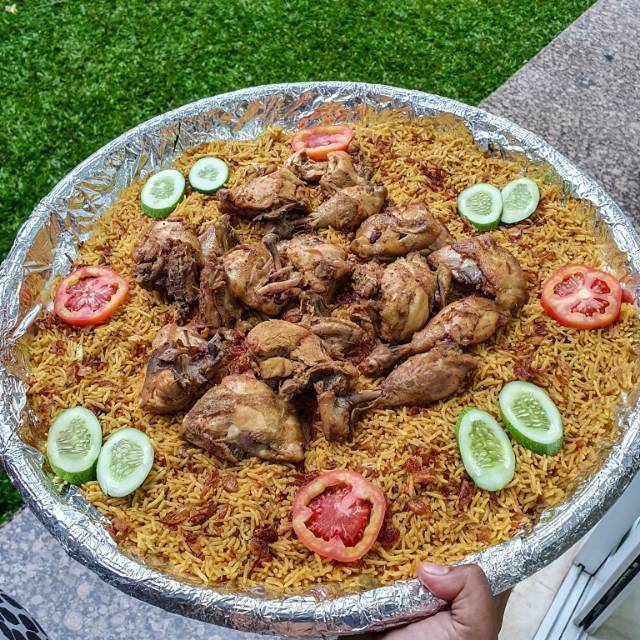
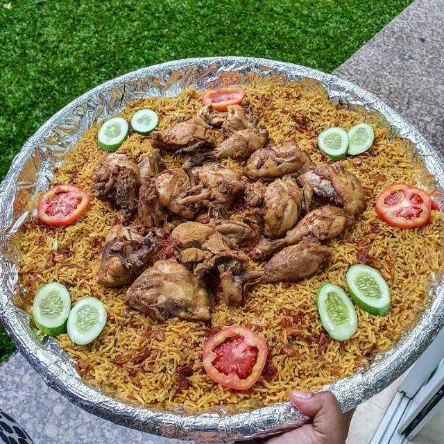
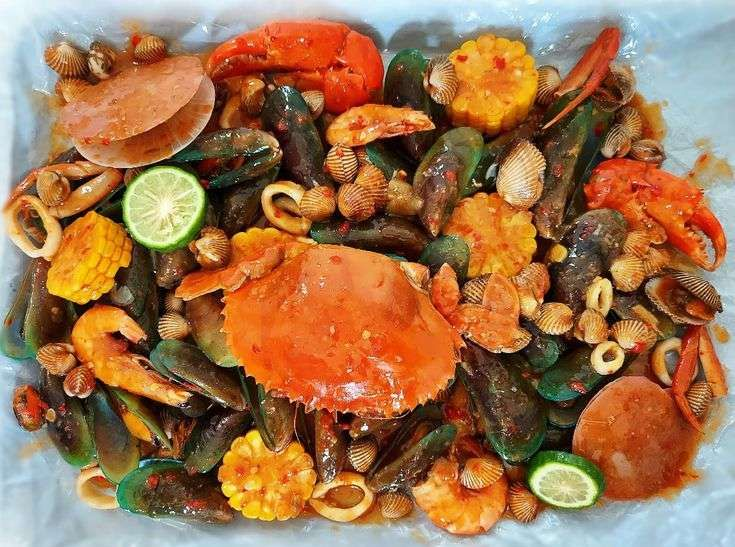
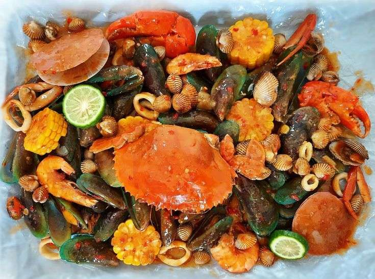
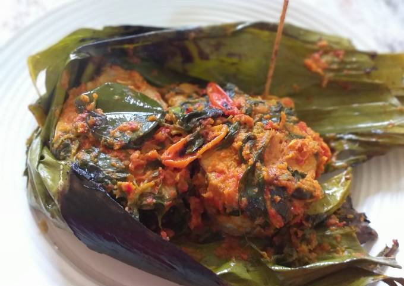
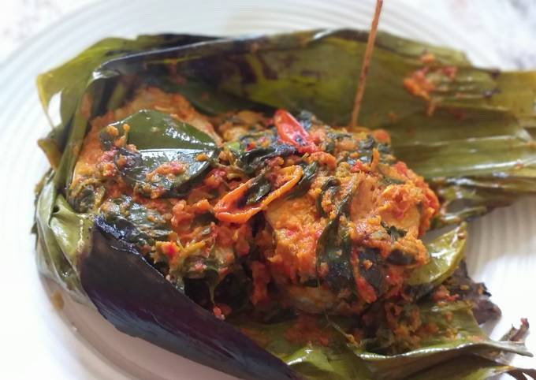

Welcome to KrustyBahari !
Discover the exquisite taste of seafood at Krusty Bahari, where we blend the richness of fresh ocean catches with our signature recipes. We offer an unforgettable dining experience, from classic dishes to modern culinary creations that will tantalize your taste buds.
With a warm ambiance and friendly service, Krusty Bahari is the perfect spot to enjoy moments with family, friends, or loved ones. Come and savor our delectable dishes, and let Krusty Bahari be your go-to culinary destination!

Famous menu


 


 


 



Secret taste !
The recipe used is a secret recipe passed down from generation to generation from the first generation of the Bahari family, making every dish at KrustyBahari have a distinctive taste that is hard to find in any restaurant!